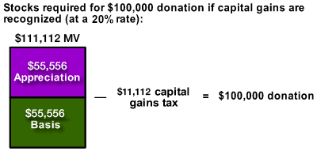

Advantage of Gifting Long-Term Appreciated Securities
To the degree that it is possible, it is more beneficial to gift long-term appreciated property than to gift cash. The advantage of giving long-term appreciated securities is twofold. First, the deduction for the full fair market value is usable against ordinary income. Second, the unrealized capital gain is not subject to income tax when the foundation sells the security.
The illustration below shows that this benefit is quite significant. Suppose the donor wished to make a $100,000 contribution using long-term appreciated securities that had doubled in value since purchase. If the donor had to recognize and pay capital gains when making the contribution, it would require $111,112 worth of securities to make the contribution; but by being able to gift the securities directly to the foundation, only $100,000 worth of securities is needed. Both scenarios provide the same charitable deduction for income tax purposes.
